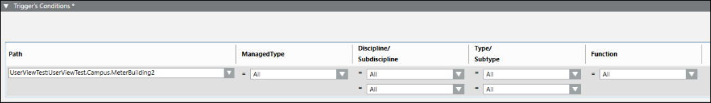
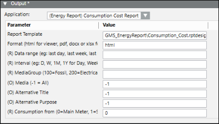

Configure Web Application Rules for Nodes
The managed meters will have report templates assigned to them for Energy and Power Reports. However, you can configure reports for other nodes or aggregators such as floors or buildings such that the executed report shall contain the data associated with the particular aggregator. Perform the following steps to configure energy and power reports for a particular aggregator.
- The librarian has configured a web application library.
- You have installed the Energy and Power Reporting Templates extension. This automatically installs the Advanced Reporting, Managed Meters, Application Host Base, and Web Services Interface extensions.
- You have added the Energy and Power Reporting Templates extension to the project. This in turn adds the Advanced Reporting, Managed Meters, Web Services Interface, and Application Host Base extensions to the project as well.
- You have configured energy reports.
- System Manager is in Engineering mode.
- The default View is set to Show Description.
- In System Browser, select Management View.
- Select Project > System Settings > Application Link Rules.
- Click the Rule Editor tab.
- In the Trigger’s Conditions expander, drag the desired target object from the System Browser to the Path field. For example, in order to run the Consumption Cost Report for particular floor or building, drag the building or floor node from the view for which you want to run the report. Select Add new elements if you want this rule to apply to the selected building or floor only, select Add new elements and subtree, if you want this rule to apply to the selected building or floor and all its subordinate nodes. Configure the other fields in the row to filter by Managed Type, Discipline/Subdiscipline, Type/Subtype, and Function. This will cause the display rule to only be triggered when the target object matches those criteria.

- Open the Output expander and in the Application drop-down list, select the Web Link corresponding to the report you want to execute. For example, to run the Consumption Cost Report, select the (Energy Report) Consumption Cost Report in the Application drop-down list.
- The parameters of the selected web link display. These parameters differ according to the selected web link in the Application drop-down list. Ensure that you do not change the default parameter values here.

- Click Save. Enter Name and Description.
NOTE: If certain energy reports display confidential information that you do not want displayed to certain users, then you must remove the display rules that are configured with such reports from the scope of those users.
- The Web application rule is configured.